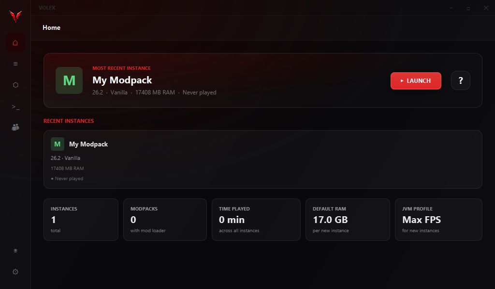
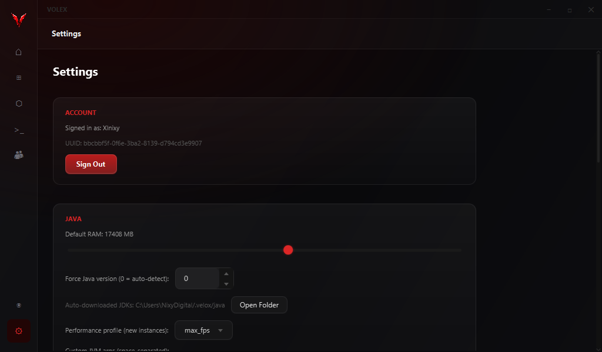
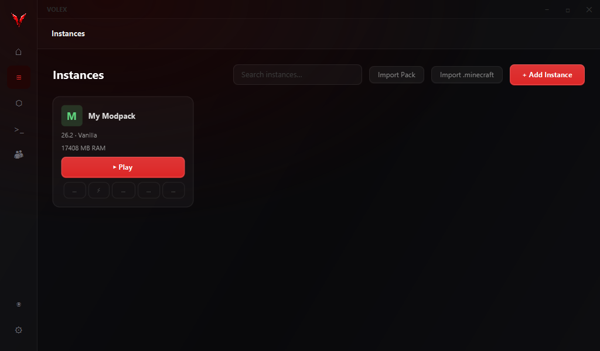
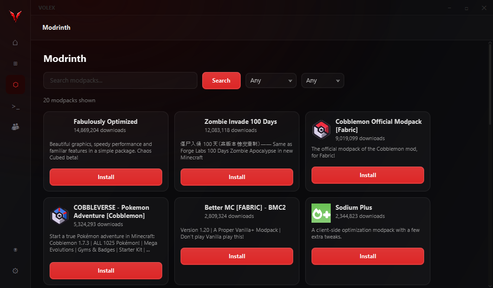
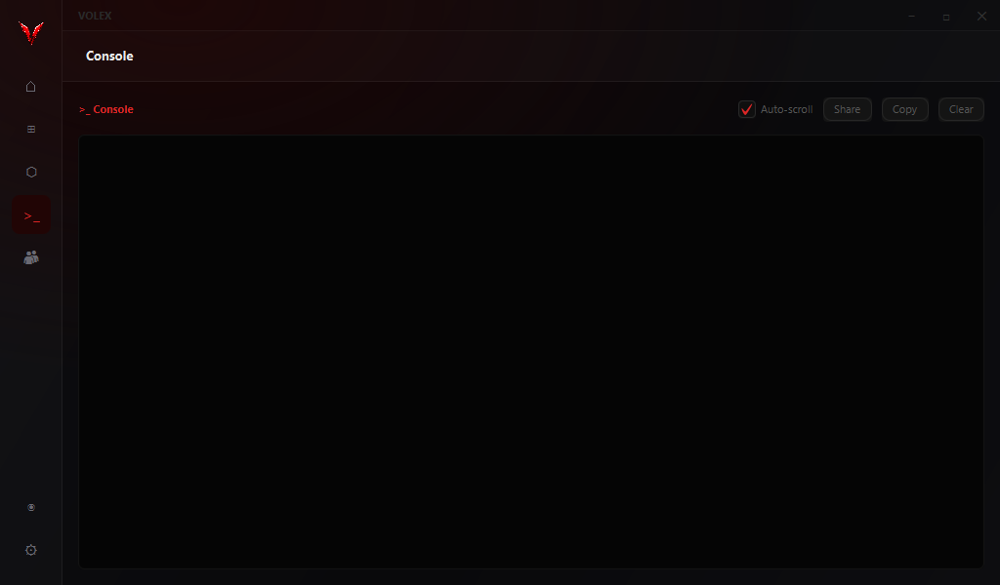

Volex finds the right Java, tunes the JVM, and keeps every profile, mod and renderer in order. The game starts faster and runs smoother, with nothing to configure by hand.

Most launchers hand Minecraft to Java with default flags and hope for the best. Volex picks a garbage collector, sizes the heap to your machine, caches class data between launches, and gets out of the way once you are playing.

Every install is independent, with its own version, loader, memory and mods. Group them, reorder them, switch in a click. One profile can never break another.
Pick the Sodium suite for broad compatibility, or move rendering to Vulkan with VulkanMod. Volex knows which mods conflict and won't let you build a broken combination.
Volex detects the JDKs already on your PC and downloads the exact version a release needs from Adoptium when it's missing. You never install or point at Java yourself.
Search Modrinth, then install, update and disable mods without leaving the launcher. Volex fingerprints each jar with SHA-1 to find genuine updates, and imports .mrpack modpacks directly.
Add Iris from the mod browser and it slots in with the rest of your mods. Volex opens the instance folder so your shader packs land in the right place.
G1 or ZGC, AppCDS class sharing, JIT flags and a right-sized heap, applied automatically per profile. The same tuning ships with the app, with no config files to edit.
Downloads are checked against Mojang's SHA-1 hashes. Modpack archives extract inside their instance and nowhere else. Friend presence is verified with Mojang, so nobody can impersonate you.
Assets and libraries download in parallel in the background, verified as they arrive. A failed file retries on its own instead of leaving you with a broken install.
When a launch fails, Volex reads the crash report and tells you the likely cause in plain language, from missing dependencies to the wrong Java version.
Real captures from the launcher.



Two things you actually feel: how quickly the game opens, and how much headroom the frame rate has once you're in a world.
These are representative figures, not a promise. Your hardware, world and settings decide the real numbers, so we don't publish a headline FPS count we can't stand behind. The honest pitch: Volex makes startup quick and gives you the mods that raise the ceiling.
Free, for Windows. The first launch sets up your account, your memory and your first profile. No installer clutter, nothing bundled you didn't ask for.